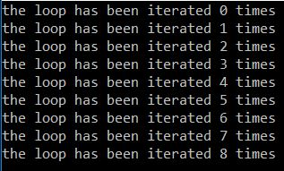
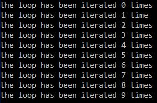
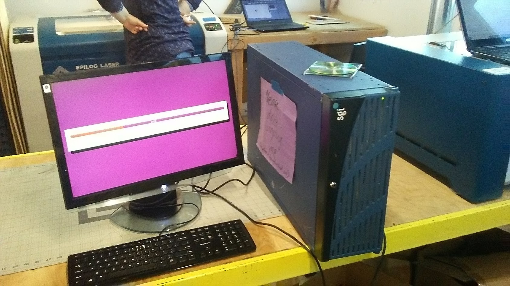
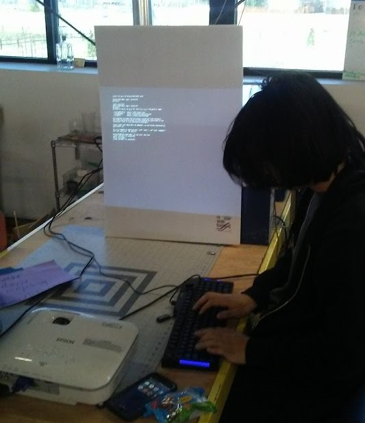

Code
I spent most of my life convinced that I had run out of time to learn how to
code. The sheer number of programming languages out there, and the number
of commands and syntax requirements for each one made any attempt to learn
any programming language short lived.
That is, until I met HTML. This website was the first major computer science
project I have worked on, and served as an introduction to HTML, CSS, and
Javascript. I have since worked with Python (writing a spam email sending script
for ELFPAC), PHP and SQL (the Mindcraft server), and Java (at school). My goal
is to be perfectly fluent in the following languages before college:
- Ruby on Rails (and Ruby on its own)
- C++ (with particular emphasis)
- C#
- Swift
Before I continue, I would like to thank my friends, all of whom are incredibly
talented, for helping me with programming. I am constantly amazed by the
things these people can do with a computer.
How To Style This Page
When writing about code, I really wanted to be able to include snippts
that looked professional, like the ones from Stack Exchange. As it turns
out, this is not hard to do at all!
The code below is styled with Prism.
This open source tool uses REGEX to highlight code in a huge array of
languages. I styled the background to be smaller and added a container
to keep it centered, and voila! Beautiful code.
def itworks():
print("finally, wonderful styling for code")
There was some difficulty styling html, namely, this page is written in html
so none of the tags showed up. I wrote this script in python to escape each
open and close tag.
def parse(str):
str = str.replace("<","<")
str = str.replace(">",">")
print(str);
code = """<!DOCTYPE html>
<html>
<head>
</head>
<body>
<code>
<p>
Here is a paragraph
</p>
</code>
</body>
</html>"""
parse(code)
Critical observers will note that the HTML shows up just fine here, that is
because I ran the script on that snippet before pasting it in, to better
show what the script looked like. Without escaping, html looks like this:
A Quick Note on Grammar
How often have you been waiting for some process on a command prompt with
a live countdown where the unit for the count didn't match either the plural
or singular form of the value? Here's an example:

As you can see, the second line ("the loop has been iterated 1 times") is
painful to read. Here's my fix, and a challenge to anyone to try to find
a solution which can be run faster.
def counter(num):
print("the loop has been iterated 0 times")
print("the loop has been iterated 1 time")
for i in range(2, num):
print("the loop has been iterated " + str(i) + " times");
counter(10)

As you can see, the output is now clear of any grammatical innacuracies. This
is really a problem with english, not traditional programming, but it is
satisfying to get right nonetheless.
Mindcraft Server
I work at a place called Mindcraft Makerspace, and recently a guy donated
a couple of old MicroCenter servers to us. We were having problems with
our signup/class management system, so we (myself and another employee)
convinced our boss to let us write our own.

We installed Ubuntu Server on the server, and connected a monitor and keyboard.
The installation took much longer than it should have, because we didn't
realize that the server was 32 bit! After installing the OS, we tried to
install Webmin so that we could easily configure SSH, PHP, and SQL.
The next problem we encountered was the screen size. For whatever reason,
the server could not display a command prompt on our monitors because the
screen was too large. Instead, we had to use a projector to view the screen.

Here you can see my friend working on installing Webmin. While he worked on
configuring the hardware, I focused my efforts on writing software for
replacing our signup system. We created an SQL database, which would be
managed by PHP run by the server. This would allow us to view and edit class
information both manually and through the website.
At the center of the website was a calendar, which would be populated with
PHP from a table containing class dates. I wrote the basic machinery of the
calendar in Javascript:
<?php session_start() ?>
<!DOCTYPE html>
<html>
<head>
<link rel="stylesheet" type="text/css" href="styling.css" />
<script src="script.js" type = "text/javascript"></script>
<title>mindcraftsignup</title>
<?php require "calendar.php"; ?>
</head>
<body>
<h1>Class Calendar</h1>
<table id="calendar">
<tbody>
<tr class="datelabel" id="sunday">
<td>
Sunday
</td>
</tr>
<?php
echo $monclass;
?>
<tr class="datelabel" id="monday">
<td>
Monday
</td>
</tr>
<?php
echo $tueclass;
?>
<tr class="datelabel" id="tuesday">
<td>
Tuesday
</td>
</tr>
<?php
echo $wedclass;
?>
<tr class="datelabel" id="wednesday">
<td>
Wednesday
</td>
</tr>
<?php
echo $wedclass;
?>
<tr class="datelabel" id="thursday">
<td>
Thursday
</td>
</tr>
<?php
echo $wedclass;
?>
<tr class="datelabel" id="friday">
<td>
Friday
</td>
</tr>
<?php
echo $friclass;
?>
<tr class="datelabel" id="saturday">
<td>
Saturday
</td>
</tr>
<?php
echo $satclass;
?>
</tbody>
</table>
<div id="buttons">
<div id="nextweek">
Next Week
</div>
<div id="prevweek">
Previous Week
</div>
</div>
</body>
</html>
var today = new Date();
var ndate = today.getDate();
var weeksahead = 0;
var month = new Array();
month[0] = "January";
month[1] = "February";
month[2] = "March";
month[3] = "April";
month[4] = "May";
month[5] = "June";
month[6] = "July";
month[7] = "August";
month[8] = "September";
month[9] = "October";
month[10] = "November";
month[11] = "December";
function adday(tod, num){
tod.setDate(tod.getDate() + num);
return(tod);
}
function refresh(sunday){
document.getElementById("sunday").innerHTML =
("| Sunday, " + month[sunday.getMonth()] + " " + sunday.getDate() + " | ");
var day = adday(sunday, 1)
document.getElementById("monday").innerHTML =
("Monday, " + month[day.getMonth()] + " " + day.getDate() + " | ");
var day = adday(sunday, 1)
document.getElementById("tuesday").innerHTML =
("Tuesday, " + month[day.getMonth()] + " " + day.getDate() + " | ");
var day = adday(sunday, 1)
document.getElementById("wednesday").innerHTML =
("Wednesday, " + month[day.getMonth()] + " " + day.getDate() + " | ");
var day = adday(sunday, 1)
document.getElementById("thursday").innerHTML =
("Thursday, " + month[day.getMonth()] + " " + day.getDate() + " | ");
var day = adday(sunday, 1)
document.getElementById("friday").innerHTML =
("Friday, " + month[day.getMonth()] + " " + day.getDate() + " | ");
var day = adday(sunday, 1)
document.getElementById("saturday").innerHTML =
("Saturday, " + month[day.getMonth()] + " " + day.getDate() + " | ");
}
function nextweek(){
weeksahead++;
var adate = new Date();
adate.setDate(adate.getDate() + (7 * weeksahead));
refresh(adate);
}
function prevweek(){
weeksahead--;
var adate = new Date();
adate.setDate(adate.getDate() + (7 * weeksahead));
refresh(adate);
}
window.onload = function(){
refresh(today);
document.getElementById("nextweek").addEventListener("click",nextweek);
document.getElementById("prevweek").addEventListener("click",prevweek);
}
Here is the site, in all of its glory:
You can see where the PHP loaded class data into the calendar, and the use
of setDate() means that the calendar can take leap years and weeks spanning
months into account. Simple and elegant.
Now for the complicated stuff. Here is the PHP for the signup page:
<?php session_start()?>
<!DOCTYPE html>
<html>
<head>
<title>Mindcraft Signup</title>
<link rel="stylesheet" type="text/css" href="signup.css" />
</head>
<body>
<?php
$servername = "Server_Name";
$servusername = "server_username";
$servpassword = "server_password";
try{
$conn = new PDO("mysql:host=$servername;dbname=satanface", $servusername, $servpassword);
$conn->setAttribute(PDO::ATTR_ERRMODE, PDO::ERRMODE_EXCEPTION);
}
catch(PDOException $e){
$feedback = "fail" . $e->getMessage();
}
if(isset($_POST['submit'])){
$userfirstname = mysqli_real_escape_string($_POST['firstname']);
$userlastname = mysqli_real_escape_string($_POST['lastname']);
$useremail = mysqli_real_escape_string($_POST['email']);
$userphone = mysqli_real_escape_string($_POST['phone']);
$useraltphone = mysqli_real_escape_string($_POST['altphone']);
$useraddress = mysqli_real_escape_string($_POST['address']);
$newuserpasswd = password_hash(mysqli_real_escape_string($_POST['password']));
$confuserpassword = mysqli_real_escape_string($_POST['confpassword']);
$query = "INSERT INTO parents (firstname, lastname, phone, alt_phone, address, email, passhash)
VALUES ({$userfirstname},{$userlastname},{$userphone},{$useraltphone},{$useraddress},
{$useremail},{$newuserpasswd});"
if(password_verify($newuserpassword, $confuserpassword)){
$confuserpassword = "";
try{
$sqlquery = $conn->prepare($query);
$stmt->execute();
$feedback = "your information has been recorded";
} catch{
$feedback = "fatal database error"
}
}
else{
$confuserpassword = "";
alert "passwords do not match";
}
}
?>
<h2>Sign Up</h2>
<div id="signuppopup">
<form method="post" action="<?php echo htmlspecialchars($_SERVER['PHP_SELF'])?>">
<label>Your First Name <input name="firstname" type="text" required /></label>
<label>Your Last Name <input name="lastname" type="text" required /></label>
<label>Email <input name="email" type="text" required /></label>
<label>Phone Number <input name="phone" type="text" required /></label>
<label>Alternative Phone Number <input name="altphone" type="text" required /></label>
<label>Address <input name="address" type="text" required /></label>
<label>Password <input name="password" type="text" required /></label>
<label>Confirm Password <input name="confpassword" type="text" required /></label>
<button name="submit" type="submit">Sign Up</button>
</div>
</body>
</html>
This page was the absolute simplest I could create. When a user clicks submit,
the data in the form fields is checked for SQL injection, and added to the
database. Here is the Sign In page:
<?php session_start() ?>
<!DOCTYPE html>
<html>
<head>
<title>Mindcraft Login</title>
<link rel="stylesheet" type="text/css" href="login.css" />
</head>
<body>
<?php
$servername = "server_name";
$servusername = "server_username";
$servpassword = "server_password";
$message = " ";
try{
$conn = new PDO("mysql:host=$servername;dbname=satanface", $servusername, $servpassword);
$conn->setAttribute(PDO::ATTR_ERRMODE, PDO::ERRMODE_EXCEPTION);
}
catch(PDOException $e){
echo "fail" . $e->getMessage();
}
if (isset($_POST['submitlogin']) && !empty($_POST['username']) && !empty($_POST['password'])){
$usename = mysqli_real_escape_string($_POST('username'));
$password = mysqli_real_escape_string($_POST('password'));
try{
$userquery = $conn->prepare("SELECT passhash FROM parents WHERE email = " + $usename);
$stmt->execute();
$userdata = $stmt->setFetchMode(PDO::FETCH_ASSOC);
} catch{
$message .= " That user does not exist";
}
if (password_verify($password,$userdata)) {
$_SESSION['login'] = true;
$_SESSION['username'] = $username;
}
else{
$message .= " Sorry, your username or password is invalid";
}
}
?>
<h2>Sign In</h2>
<form method ="post" action="<?php echo htmlspecialchars($_SERVER['PHP_SELF'])?>">
<div class="loginsignup">
<label>
<b>Username</b>
<input type="text" placeholder="Username" name="username" required/>
</label>
<label>
<b>Password</b>
<input type="password" placeholder="Password" name="password" required/>
</label>
<button name="submitlogin" type="submit">Login</button>
<label><input type="checkbox" check="remember" name="remember" />Stay Logged In</label>
</div>
</form>
</body>
</html>
All of the other PHP on the site looks like this as well. Four days into
the project, my boss decided that it was too complicated and the servers
were scrapped, however, I will certainly be using what I have learned to
develop better distributed systems.
kandao (看到)
This is my first practical programming task. In my Chinese class, we use
a wonderufl website called
World Language Games. Every week, we have to earn a certain number of points
for homework, but those of us who wanted to learn to write the characters by
hand (it does seem strange that that wasn't required in the first place) found
ourselves doing twice as much, because there was no way to practice handwriting
on World Language Games.
So I set about making 看到 (Pinyin:kàn'dào, English: See and Understand), which I
planned to send to the creator of World Language Games in the hopes that he
would integrate it with his website. This project was started before I knew
anything about Javascript, so it was a good 5 months before I felt confident
enough to really begin working on it.
World Language Games is written in PHP, which made perfect integration impossible
because it is invisible to the client, but I figured that I could make it
as compatible as possible by keeping all important data in global variables
written at the very beginning of the page.
My first attempt was at brute force: by overlaying two HTML canvases, I could
print the desired character on one and have the user write on the other, then
find the percentage of matching pixels. Here is that implementation:
<!DOCTYPE html>
<html >
<head>
<meta charset="UTF-8">
<meta name="viewport" content="width=device-width, initial-scale=1.0">
<title>Character Writing</title>
</head>
<body style="background-color:#fff9bdff;">
<table width="100%" style="border: 1px solid black; text-align:center;">
<tr>
<td>
<h1>Character Writing (Online)</h1>
</td>
</tr>
<tr>
<td>
<p>kàn'dào (to see and understand)</p>
</td>
</tr>
<tr>
<td>
<div id="check">View Character</div>
</td>
</tr>
</table>
<div id="paint">
<canvas id="myCanvas"></canvas>
</div>
<div id="reference">
<canvas id="refcanvas"></canvas>
</div>
<img id="background" src="background.png" alt="stroke order background" />
<div class="scriptdiv">
<script>
var back = document.getElementById("background");
back.style.positon = "absolute";
back.height = back.width = window.innerHeight/1.7;
back.style.top = (document.getElementById("myCanvas").offsetTop) + "px";
back.style.left = ((window.innerWidth - (window.innerHeight/1.7))/2) + "px";
</script>
</div>
<table width="100%" style="border: 1px solid black; text-align:center;">
<tr>
<td>
<div id="clear">Clear Drawing</div>
<div id="evaluate" onclick="countempixls()">Evaluate</div>
</td>
</tr>
</table>
</body>
<div class="stylediv">
<style>
.stylediv, .scriptdiv{
display:none;
}
#refcanvas{
position:absolute;
display:none;
}
#background{
position:absolute;
z-index:-1;
}
</style>
</div>
<div class="scriptdiv">
<script>
function countempixls(){
console.log("evaluating");
var refim = document.getElementById("refcanvas").getContext("2d").getImageData(0,0,window.innerWidth,(window.innerHeight/1.7));
var subim = document.getElementById("myCanvas").getContext("2d").getImageData(0,0,window.innerWidth,(window.innerHeight/1.7));
var matchcount = 1;
var misscount = 1;
for(i = 0; i<=refim.data.length; i++){
if(refim.data[i] == subim.data[i]){
matchcount++;
}
else{
misscount++;
}
}
console.log(matchcount);
console.log(misscount);
alert((matchcount/misscount) + " percent accuracy");
console.log(matchcount/misscount);
}
</script>
<script>
var ref = document.getElementById("refcanvas");
ref.style.top = document.getElementById("myCanvas").offsetTop + "px";
var toggle = function(){
if(ref.style.display == "none"){
ref.style.display = "block";
}
else{
ref.style.display = "none";
}
}
document.getElementById("check").addEventListener("click", toggle);
</script>
<script>
window.onload = function(){
var pcanv = document.getElementById("myCanvas");
var rcanv = document.getElementById("refcanvas");
var ctd = pcanv.getContext("2d");
var ctx = rcanv.getContext("2d");
pcanv.width = rcanv.width = window.innerWidth;
pcanv.height = rcanv.height = (window.innerHeight/1.7)
ctx.font = (window.innerHeight/1.8) + "px Verdana";
ctx.textAlign="center";
var hormid = window.innerWidth/2;
var vertmid = document.getElementById("myCanvas").height/1.2;
ctx.fillText("好", hormid, vertmid);
}
</script>
<script>
var dcanvas = document.getElementById('myCanvas');
var clear = document.getElementById('clear');
var image = document.getElementById('image');
var dtx = dcanvas.getContext('2d');
var painting = document.getElementById('paint');
var paint_style = getComputedStyle(painting);
var mouse = {x: 0, y: 0};
dcanvas.addEventListener('mousemove', function(e) {
mouse.x = e.pageX - this.offsetLeft;
mouse.y = e.pageY - this.offsetTop;
}, false);
dcanvas.addEventListener('mousedown', function(e) {
dtx.beginPath();
dtx.moveTo(mouse.x, mouse.y);
dcanvas.addEventListener('mousemove', onPaint, false);
}, false);
dcanvas.addEventListener('mouseup', function() {
dcanvas.removeEventListener('mousemove', onPaint, false);
}, false);
clear.addEventListener('mouseup', function() {
dtx.clearRect(0, 0, dcanvas.width, dcanvas.height);
});
function drawingCallback(data) {
console.log(data)
}
function httpGet(theUrl, data, callback) {
var xmlHttp = new XMLHttpRequest();
xmlHttp.onreadystatechange = function() {
if (xmlHttp.readyState == 4 && xmlHttp.status == 200)
callback(xmlHttp.responseText);
}
xmlHttp.open("GET", theUrl + "?" + data, true); // true for asynchronous
xmlHttp.send(null);
}
var onPaint = function() {
dtx.lineWidth = 15;
dtx.lineJoin = 'round';
dtx.lineCap = 'round';
dtx.strokeStyle = '#000000';
dtx.lineTo(mouse.x, mouse.y);
dtx.stroke();
}
</script>
</div>
</html>
This document is styled to match the format of World Language Games as perfectly
as possible. As such, the design and formatting is the exclusinve intellectual
property of the creator of World Language Games.
Here is an iFrame running that code:
As you can see, it didn't work. There were two huge problems with this approach.
The first was that it was almost impossible to line up the character with
the reference in the back (seriously, try it!). Second, after drawing a character,
the percent accuracy decreases drastically because there are almost always
more pixels that miss than that actually overlap with the text.
I set about looking for an off-the-shelf alternative, and my friend suggested
OCR software, so I tried that. The following Javascript replaced the function
"countempixls", and used an XMLHttpRequest to contact and use an OCR API called
ocr.space.
function countempixls(){
var subim = document.getElementById("myCanvas").toDataURL();
var trsubim = subim.slice(22);
var response;
var xhttp = new XMLHttpRequest();
xhttp.onreadystatechange = function(){
if(this.readyState == 4 && this.status == 200){
response = this.response;
console.log(response);
}
}
var jsonfile = {"base64Image":trsubim, "language":"chs"};
console.log(jsonfile);
xhttp.open("POST", "https://api.ocr.space/parse/image", true);
xhttp.setRequestHeader("apikey", "a4aaf5477788957");
xhttp.send(jsonfile);
}
This didn't work either. The OCR software could not process handwriten images,
even when I tried using the demo on their page. It would read the image, and
return that it had found no text.
After these failures, I was desperate for something that worked every time.
That is when I found HanziLookupJS,
a library from github user "gugray" that was adapted from software by Jordan Kiang.
This software uses an enormous array of radicals that it can piece together
into Chinese characters to provide an astonishingly accurate guess of the
character you are writing.
After an afternoon of tinkering, I had modified it to fit in World Language Games, and
set it up to evaluate characters as opposed to recognising them. The only
truly major changes that I made were stylistic. Here is the result:
I won't post the code here, because it is all available at GitHub.
It is now ready to be presented to the creator of World Language Games, more on
that soon.